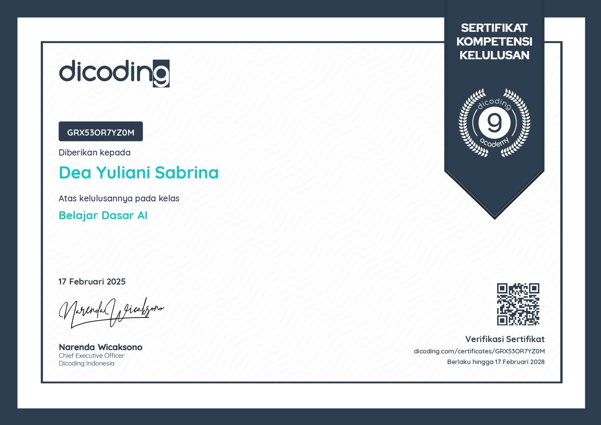
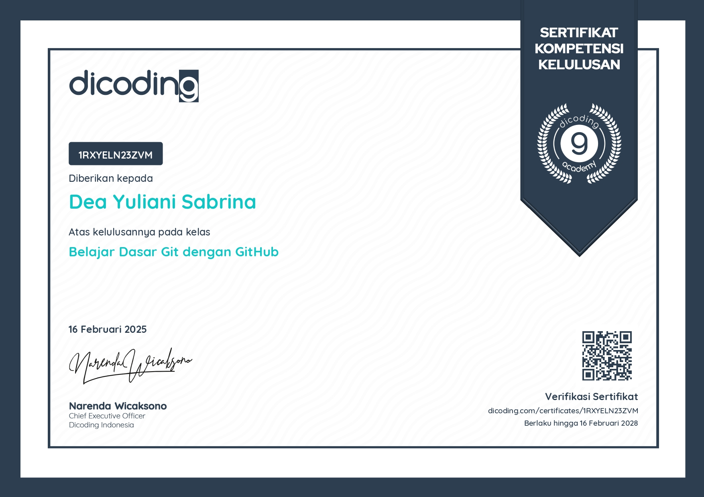
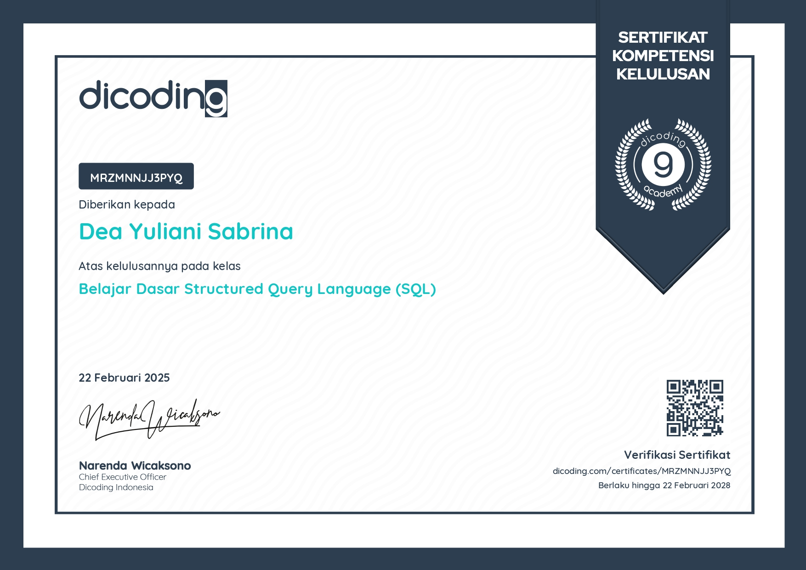
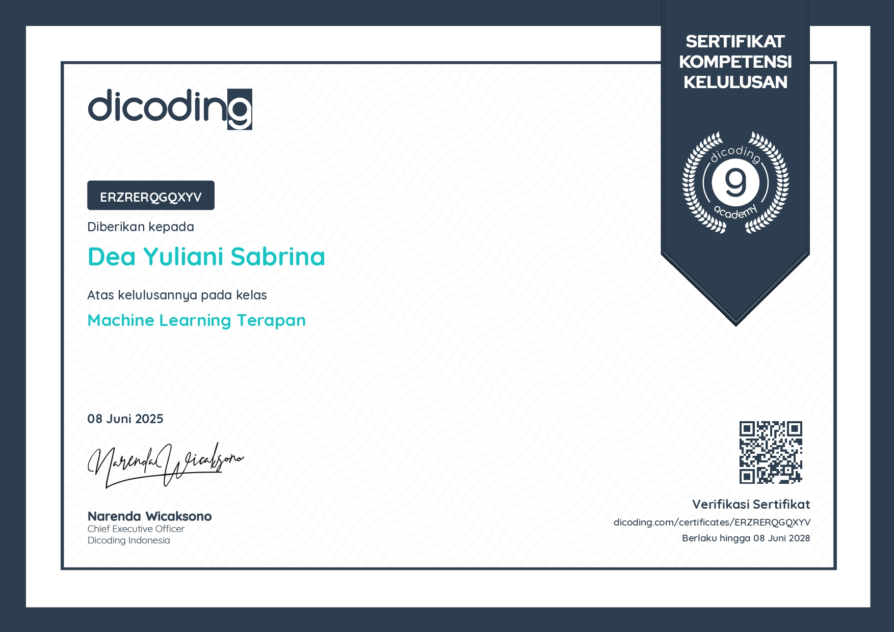
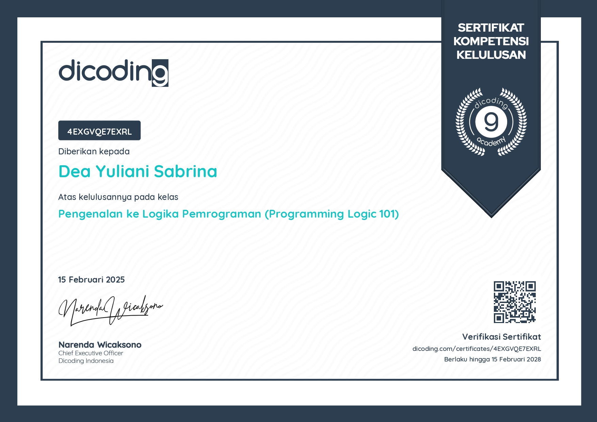
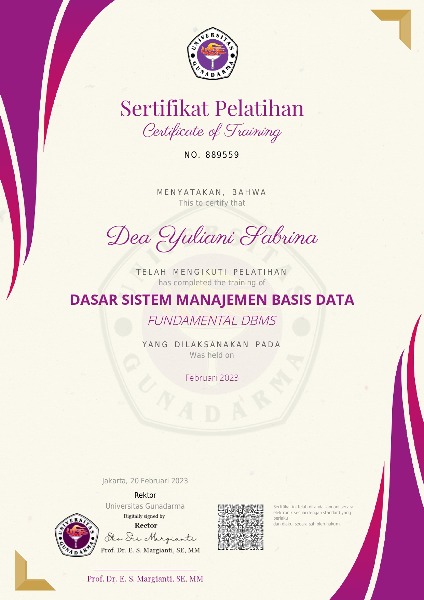
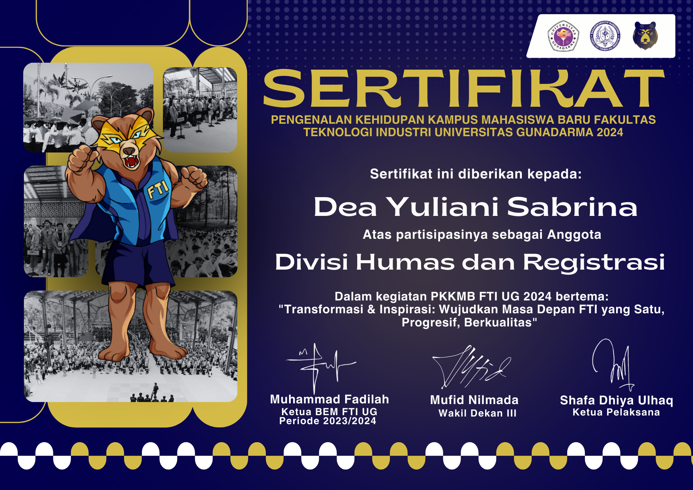
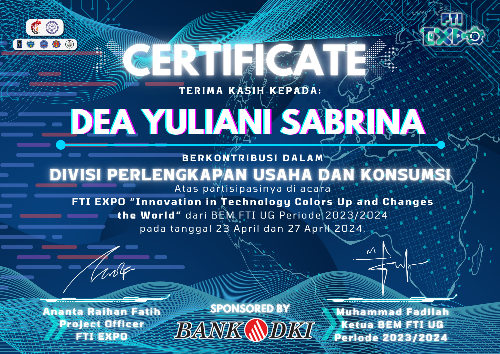
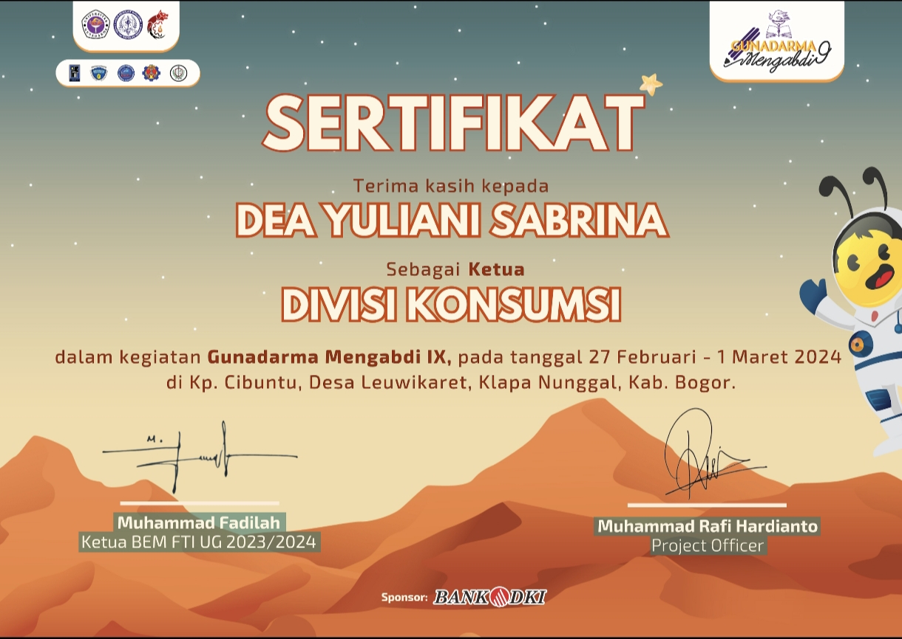
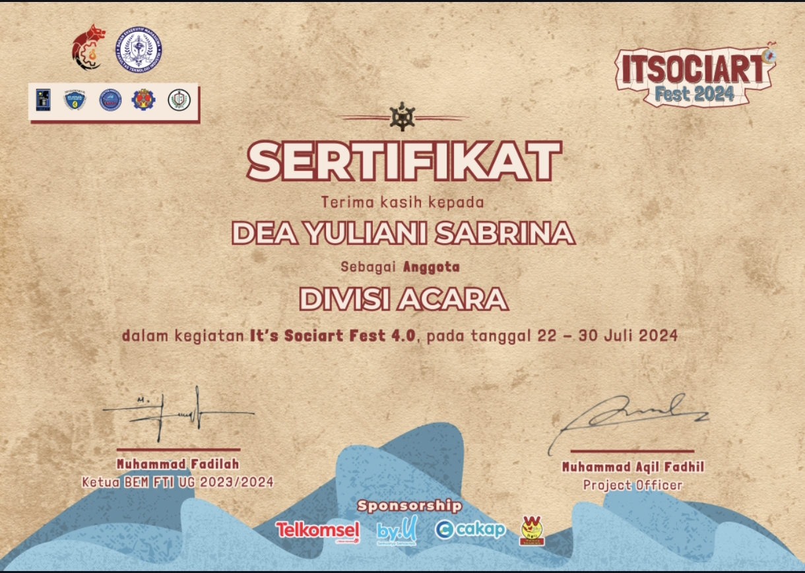

All Certificates
🏆 Bootcamp Certificates
Dicoding – Data Analysis with Python
Completed Data Analysis Certification
Learned end-to-end data analysis processes using Python—covering descriptive statistics, data cleaning, data wrangling, EDA, visualization, and dashboard development with Streamlit.
Valid: 14 March 2025 – 14 March 2028
View Certificate →
Dicoding – Learn AI Basics
AI Fundamentals Certification
Introductory course covering AI concepts, data for AI, machine learning basics, and essential deep learning fundamentals with hands-on examples.
Valid: 17 February 2025 – 17 February 2028
View Certificate →
Dicoding – Basic Git & GitHub
Git & GitHub Fundamentals Certification
Completed foundational Git and GitHub training focused on version control, branching, collaboration workflows, conflict resolution, pull requests, and building a professional GitHub portfolio.
Valid: 16 February 2025 – 16 February 2028
View Certificate →
Dicoding – Structured Query Language Fundamentals
Structured Query Language Fundamentals Certification
Completed foundational SQL training covering data concepts, relational databases, DBMS, DDL and DML commands, constraints, and hands-on practice with commonly used queries in data analytics workflows.
Valid: 22 February 2025 – 22 February 2028
View Certificate →Dicoding – Basic Data Visualization
Basic Data Visualization Certification
Completed beginner-level training on data visualization fundamentals, covering concepts, spreadsheet tools, data preprocessing, transforming data into charts, common visualization mistakes, documentation, and best-practice design principles including Gestalt, preattentive attributes, and visual storytelling using Google Sheets.
Valid: 20 February 2025 – 20 February 2028
View Certificate →Dicoding – Fundamental Data Processing
Fundamental Data Processing Certification
Completed comprehensive data processing training covering software engineering with Python, data repositories, ETL pipelines (extract, transform, load), data cleaning, transformation, automation workflows, and building high-quality datasets for real-world data projects.
Valid: 18 May 2025 – 18 May 2028
View Certificate →Dicoding – Machine Learning for Beginners
Machine Learning for Beginners Certification
Completed industry-standard introductory training in Machine Learning, covering classification, regression, and clustering on tabular data. Gained hands-on experience across the ML workflow—from data collection, model development, feature engineering, evaluation, to model optimization using hyperparameter tuning.
Valid: 09 April 2025 – 09 April 2028
View Certificate →Dicoding – Machine Learning Development
Machine Learning Development Certification
Completed advanced training in machine learning development covering deep learning, computer vision, natural language processing, time series modeling, image classification, recommendation systems, reinforcement learning, and model deployment. Gained hands-on experience building deep learning projects for text and image data aligned with current industry standards.
Valid: 07 May 2025 – 07 May 2028
View Certificate →
Dicoding – Applied Machine Learning
Applied Machine Learning Certification
Completed applied machine learning training covering predictive analytics, sentiment analysis, computer vision, and recommendation systems. Gained hands-on experience designing ML systems and building real-world projects including business predictive models, deep learning sentiment analysis, image recognition and object detection, and recommender systems.
Valid: 08 June 2025 – 08 June 2028
View Certificate →Dicoding – Programming Foundations for Aspiring Software Developers
Software Development Programming Foundations Certification
Completed foundational training in software development aligned with Indonesia’s occupational standards (KBJI: 2512.03 / Indotask: 2512). Gained practical experience analyzing user and technical requirements, creating application flow diagrams, modifying software interfaces, and writing basic programs using HTML, CSS, and JavaScript. Developed essential skills in documentation, archiving, and communicating technical specifications.
Valid: 13 February 2025 – 13 February 2028
View Certificate →Dicoding – Applied Machine Learning
Applied Machine Learning Certification
Completed applied machine learning training covering predictive analytics, sentiment analysis, computer vision, and recommendation systems. Gained hands-on experience designing ML systems and building real-world projects including business predictive models, deep learning sentiment analysis, image recognition and object detection, and recommender systems.
Valid: 08 June 2025 – 08 June 2028
View Certificate →
Dicoding – Python Programming Foundations
Python Programming Foundations Certification
Completed foundational Python programming training covering essential concepts such as data interaction, expressions, sequential actions, control flow, arrays, matrices, functions, procedures, and optional object-oriented programming. Gained hands-on experience using Python across multiple environments including Visual Studio Code, Jupyter Notebook, and Google Colab, along with best practices in PEP 8, unit testing, and popular Python libraries.
Valid: 27 February 2025 – 27 February 2028
View Certificate →
Dicoding – Programming Logic 101
Programming Logic 101 Certification
Complete an introductory programming logic class for beginners. Learn the concepts of logic and algorithms, logic gates (AND, OR, NOT, NAND, NOR, XOR, XNOR), and the fundamentals of computational thinking such as decomposition, patterns, abstraction, and algorithm writing. At the end of the class, you will understand the application of programming logic to real-world case studies.
Valid: 15 February 2025 – 15 February 2028
View Certificate →🎓 Campus Certificates

Training Certificate
Fundamental Database Management Systems (DBMS)
Training on the fundamentals of relational database systems. Covered core topics such as relational database concepts, Data Definition Language (DDL) and Data Manipulation Language (DML) in MySQL, SQL Server, and Oracle, as well as basic SQL operations including SELECT and schema management across multiple database platforms.
Gunadarma University – February 2023
View Certificate →
Training Certificate
Fundamental Web Programming
Training on the fundamentals of web programming, covering Web Basics, Go Programming, Java J2EE, JSP, C#, .NET Framework, and ASP.NET.
Gunadarma University – August 2023
View Certificate →👥Organization

Organizational Certificate
PKKMB FTI Universitas Gunadarma – Humas & Registrasi
Served as part of the Public Relations & Registration Division during PKKMB FTI Universitas Gunadarma 2024. Responsibilities included managing the communication group for new students, verifying participant data, and ensuring smooth coordination and information flow throughout the event. Also assisted as a liaison officer (LO) for the Agrotechnology Department, accompanying the group during the entire agenda and supporting communication with the committee.
September 2024
View Certificate →
Organizational Certificate
FTI Expo – Division of Logistics & Consumption
Served as a member of the Logistics and Consumption Division during FTI Expo 2024. Responsible for preparing and distributing essential logistical needs to support other divisions. Coordinated with multiple departments to ensure all equipment and consumption items were available and delivered according to event requirements.
April 2024
View Certificate →
Organizational Certificate
Gunadarma Mengabdi IX – Head of Consumption Division
Served as the Head of the Consumption Division for Gunadarma Mengabdi IX. Responsible for preparing the event’s budget plan (RAB), managing and determining the meal plan for a 3-day, 2-night program, and coordinating division members with structured task distribution. Collaborated with other divisions to ensure timely and smooth distribution of food and beverages, and prepared the final activity report as part of accountability and future improvement.
March 2024
View Certificate →
Organizational Certificate
ITSOCIART FEST 2024 – Event Division Member
Served as an Event Division member for ITSOCIART FEST 2024. Acted as the person in charge (PIC) of the badminton competition branch by preparing the venue, organizing participant groups, and managing the match schedule. Coordinated with participants regarding technical details, rules, and schedule changes. Created tournament brackets, distributed plaques and prizes, and supervised the event to completion, demonstrating strong event management, communication, and leadership skills within a faculty-scale activity.
July 2024
View Certificate →